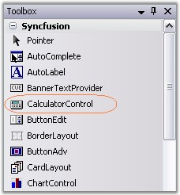
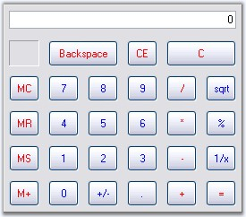

The Calculator control can be available to the designer by just dragging-and-dropping the Calculator control from the toolbox onto the form.

Figure 186: CalculatorControl in Toolbox
It can be created programmatically using the below steps.
1. Include the required namespace.
|
[C#]
using Syncfusion.Windows.Forms.Tools; |
|
[VB.NET]
Imports Syncfusion.Windows.Forms.Tools |
2. Declare and create an instance of the Calculator control class.
|
[C#]
private Syncfusion.Windows.Forms.Tools.CalculatorControl calculatorControl1;
// Create an instance of the Calculator control this.calculatorControl1 = new CalculatorControl(); |
|
[VB.NET]
Private calculatorControl1 As Syncfusion.Windows.Forms.Tools.CalculatorControl
' Create an instance of the Calculator control Me.calculatorControl1 = New CalculatorControl() |
3. As the final step, add the Calculator control to the form as follows.
|
[C#]
// Add the CalculatorControl control to the form. this.Controls.Add(this.calculatorControl1); this.calculatorControl1.Visible=true; |
|
[VB.NET]
' Add the CalculatorControl control to the form. Me.Controls.Add(Me.calculatorControl1) Me.calculatorControl1.Visible=True |

Figure 187: Calculator Control at Run Time
See Also